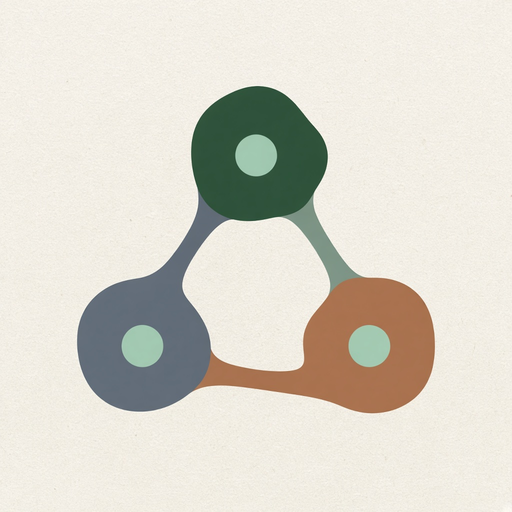
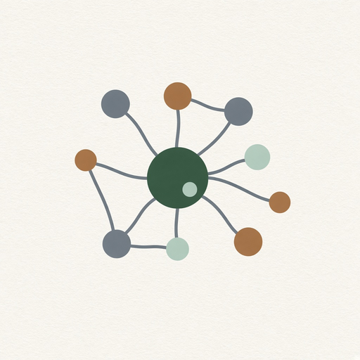

Phyllux apps hub
1. Core Quantonics platform
6 modules in this Suite family. Soft launch lists the map; depth grows as Suite modules ship.
1. Quantonics OSOrganize knowledge, decisions, people, and events as interrelationships.

2. Quanton GraphVisual graph database of interconnected quantons.3. Quanton ExplorerInteractive 2D/3D visualization of a Quantonics-style network.
4. Quanton StudioNo-code builder for quanton, relationship, context, value, uncertainty, event.
5. Quanton APIDeveloper API for Quanton, Relationship, Context, Value, Event, Uncertainty.

6. Quantonic Knowledge GraphAI knowledge graph with context, perspective, and uncertainty.